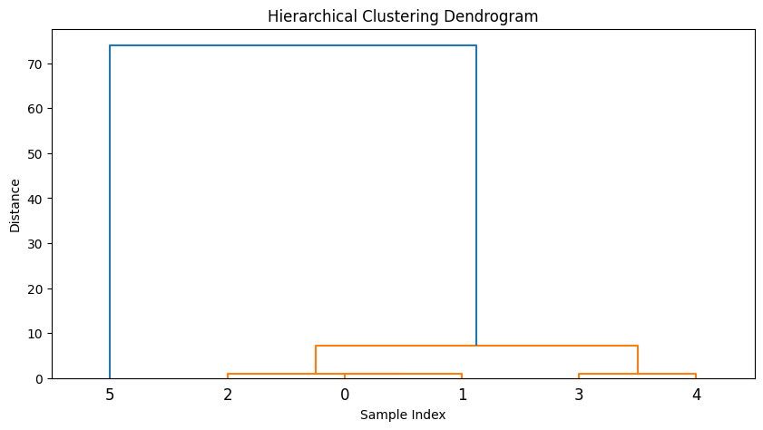

Hierarchical_clustering
Hierarchical clustering（层次聚类）
是一种用于数据分析的聚类算法。它通过计算数据点之间的相似度或距离，并将最相似的数据点组合成簇，然后逐步合并这些簇，直到所有的数据点都被聚合到一个簇为止。这个过程形成了一个树状的结构，称为聚类树或者树状图。这种树状结构可以帮助我们理解数据的层次结构，并且不需要事先指定聚类的数量。
在层次聚类中，有两种主要的方法：凝聚聚类（agglomerative clustering）和分裂聚类（divisive clustering）。
- 凝聚聚类：该方法从每个数据点作为一个簇开始，然后逐步合并最相似的簇，直到所有的数据点都聚合到一个簇为止。
- 分裂聚类：与凝聚聚类相反，该方法从所有的数据点作为一个簇开始，然后逐步将最不相似的簇分裂成更小的簇，直到每个数据点都成为一个单独的簇。
层次聚类的优点之一是不需要事先指定聚类的数量，因为它可以根据数据的结构自动形成聚类。然而，它的计算复杂度通常比其他聚类算法高，特别是当数据集很大时。
凝聚聚类其步骤通常如下：
- 初始化：将每个数据点视为一个单独的簇。
- 计算相似度：计算每一对簇之间的相似度或距离。常用的距离度量包括欧氏距离、曼哈顿距离、闵可夫斯基距离等。
- 合并最相似的簇：找到相似度最高的两个簇，将它们合并成一个新的簇。
- 更新相似度矩阵：更新相似度矩阵，以反映新形成的簇与其他簇之间的相似度。
- 重复步骤3和4：重复步骤3和4，直到只剩下一个簇，即所有的数据点都被聚合到一个簇为止。
- 生成聚类树：根据合并的顺序，生成一棵树状结构，称为聚类树或者树状图。这个树状结构反映了数据点的层次结构和聚类的关系。
这段代码实现的是层次聚类中的最小距离法（Single Linkage）。在每一次迭代中，它会计算所有两两组合之间的距离，并将距离最近的两个组合并成一个新的组。然后重复这个过程，直到只剩下一个组。
import numpy as np
def euclidean_distance(x1, x2):
return np.sqrt(np.sum((x1 - x2)**2))
def distance_between_groups(i, j):
return euclidean_distance(np.mean(cluster[f"group{i}"], axis=0), np.mean(cluster[f"group{j}"], axis=0))
data = np.array([[1, 2], [2, 2], [2, 3], [8, 7], [8, 8], [25, 80]])
cluster = {f"group{i}": [data[i].tolist()] for i in range(len(data))}
while len(cluster) > 1:
nearest_distance = float('inf')
for i in range(len(cluster) - 1):
for j in range(i + 1, len(cluster)):
d = distance_between_groups(i, j)
if d < nearest_distance:
nearest_distance = d
ni, nj = i, j
# 合并两个组的数据
group1_data = cluster[f"group{ni}"]
group2_data = cluster[f"group{nj}"]
merged_data = group1_data + group2_data
# 删除被合并的组
del cluster[f"group{ni}"]
del cluster[f"group{nj}"]
# 更新 cluster 字典中的键
for i, (key, value) in enumerate(cluster.copy().items()):
cluster[f"group{i}"] = cluster.pop(key)
cluster[f"group{i+1}"] = merged_data
print(cluster)
生成聚类树

import numpy as np
from scipy.cluster.hierarchy import dendrogram, linkage
import matplotlib.pyplot as plt
data = np.array([[1, 2], [2, 2], [2, 3], [8, 7], [8, 8], [25, 80]])
# 使用ward方法进行层次聚类
Z = linkage(data, method='single')
# 绘制聚类树
plt.figure(figsize=(10, 5))
dendrogram(Z)
plt.title('Hierarchical Clustering Dendrogram')
plt.xlabel('Sample Index')
plt.ylabel('Distance')
plt.show()